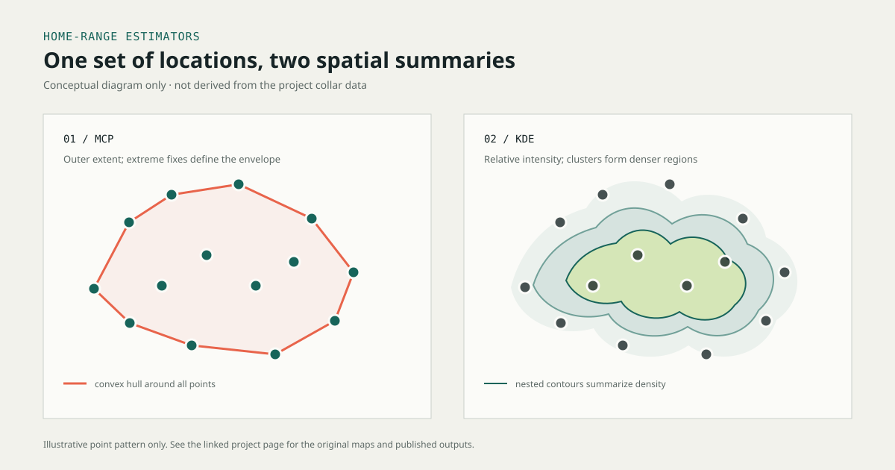

GEOSPATIAL ANALYSIS · SPATIAL ECOLOGY
Two ways to draw
a coyote's home range.
Minimum Convex Polygons capture the outer extent of recorded movement. Kernel Density Estimation reveals where those locations cluster. This project uses both views to study 984 radio-collar fixes from seven coyotes.
- Animals
- 7 coyotes
- Observations
- 984 locations
- Methods
- KDE · MCP
- KDE contours
- 50% core · 5% total
01 / THE DATA
What does a home range measure?
The analysis uses a subset of radio-collar records from seven individual coyotes. Across 984 locations, the records include sex, season, territory, coordinates, and time of capture.
The central question is how the choice of spatial estimator changes the picture of animal space use: a boundary that encloses fixes, or a surface that gives higher weight to clusters.
02 / METHOD COMPARISON
Extent versus intensity
| Lens | Minimum Convex Polygon | Kernel Density Estimation |
|---|---|---|
| How it works | Draws the smallest convex polygon that contains the recorded points. | Places a smooth kernel around each location and aggregates the surfaces into an estimate of use density. |
| What stands out | The outermost fixes define the vertices; sparse outliers can stretch the boundary. | Clusters receive higher density, revealing concentration as well as broader use. |
| Project output | A geometric envelope for each set of movement locations. | A 50th-percentile core range and a 5th-percentile total-range contour, as described in the project. |
| Best read as | Observed spatial extent. | Relative intensity of use, dependent on the density settings and contour threshold. |
They answer different questions. MCP is a useful baseline for the outer extent of recorded fixes, but it treats a remote point as a boundary vertex. KDE gives more visual weight to dense clusters, but its contours depend on choices such as kernel bandwidth and raster resolution.
03 / SPATIAL OUTPUTS
Read the maps side by side
The original project presents MCP and KDE outputs in separate figures. Together, they contrast the all-points envelope with percentile-based density ranges; they are not presented here as a matched, quantitative comparison for one animal.

04 / HABITAT CONTEXT
From range to selection
The project also compares observed land-cover records with expected counts based on each cover type's share of the study area. Ratios above 1 indicate more observations than expected under that area-proportional baseline; ratios below 1 indicate fewer.
The highest reported ratio belongs to Inter-Mountain Basins Semi-Desert Shrub Steppe, but it is based on two observations in a class covering only 0.2% of the area. Treat that result as sparse evidence, not a strong preference claim.
05 / LIMITS & REPRODUCIBILITY
What the published results support
- The published page describes MCP outlier sensitivity and the KDE density interpretation, but does not report per-animal area values for a numerical estimator comparison.
- The available project files do not include the original collar locations or document the coordinate reference system, KDE bandwidth, or raster cell size. Those settings are needed to reproduce and compare areas rigorously.
- The published figures support a qualitative contrast between range extent and density of use; they do not establish a statistical difference or preference beyond the selection-ratio caveat above.
Processing note: the source page reports that an ArcPy script automated density-surface calculations across animals.
06 / SOURCE
Original project
- Home Range Analysis: A Geospatial Analysis of Coyote Movement Patterns · original project text and figures
- Portfolio projects · related GIS work